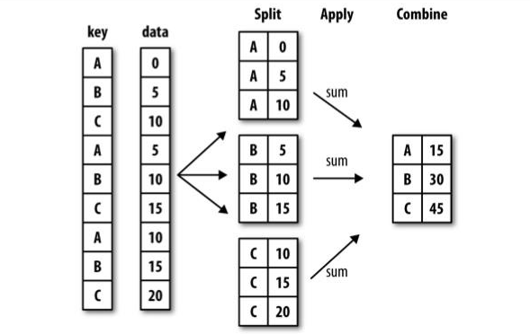

3.5.1 分组(GroupBy)
Hanley Wickham(许多R语言包的作者)，创造了一个用于表示分组运算的术语'split-apply-combine'(拆分-应用-合并), 这个词很好描述了整个过程。 分组运算的第一个阶段, pandas对象(Series和DataFrame)中的数据会根据你所提供的一个或多个键被拆分(split)成多组. 拆分操作是在对象的特定轴上进行的. 例如，DataFrame可以在其行(axis=0)或列(axis=1)上进行分组. 然后, 讲一个函数应用(apply)到各个分组并产生一个新值. 最后，所有这些函数的执行结果会被合并(combine)到最终的结果对象中.

示例代码： 3.5.1_分组-GroupBy